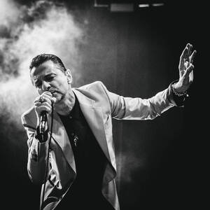
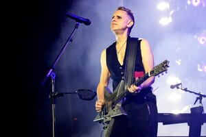
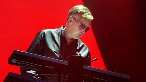
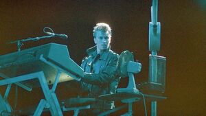
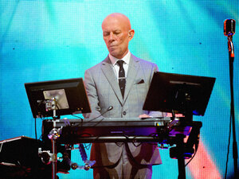
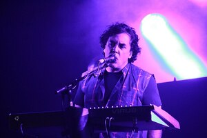
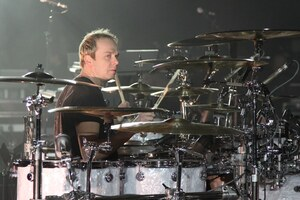

Depeche Mode ha tenido mucha gente en sus filas, ya sea como miembros oficiales o como músicos de apoyo para los conciertos.
En esta página web, vamos a conocer a todos los que han pasado por las filas de la mejor banda del Universo
| Dave Gahan | |||
|---|---|---|---|
|  | Rol
|
Nacimiento: 9 de Mayo de 1962 en Reino Unido |
Dave Gahan, nacido el 9 de mayo de 1962 en Epping, Essex, Reino Unido, es el carismático vocalista y uno de los miembros más emblemáticos de la banda británica de música electrónica Depeche Mode. Su inconfundible voz y presencia en el escenario han sido fundamentales para definir el sonido y la imagen de la banda desde sus inicios. Gahan creció en Basildon, un suburbio de Londres, en una familia de clase trabajadora. Su infancia estuvo marcada por dificultades, como el divorcio de sus padres y la muerte temprana de su padrastro. A pesar de estas adversidades, Gahan encontró su escape en la música y el arte desde una edad temprana, siendo influenciado por artistas como David Bowie, Iggy Pop y The Clash. En 1980, Gahan se unió a Depeche Mode, que en ese momento estaba formada por Vince Clarke, Martin Gore y Andrew Fletcher. Fue descubierto por Clarke, quien lo vio actuar en un club local. Poco después, la banda firmó con Mute Records y lanzaron su primer álbum, "Speak & Spell" (1981), que tuvo un éxito inmediato, con Gahan como la voz principal. Cuando Clarke dejó la banda poco después, Martin Gore asumió el papel de compositor principal, mientras que Gahan continuó siendo el rostro y la voz de Depeche Mode. A lo largo de la década de los 80 y 90, la banda creció en popularidad, lanzando álbumes icónicos como "Black Celebration" (1986), "Music for the Masses" (1987) y el monumental "Violator" (1990), que incluía éxitos como "Personal Jesus" y "Enjoy the Silence". Sin embargo, el éxito mundial también trajo desafíos personales. Durante los años 90, Gahan luchó con adicciones severas a las drogas y el alcohol, lo que casi lo llevó a la muerte en varias ocasiones. El punto más crítico fue en 1996, cuando sufrió una sobredosis de heroína y cocaína que lo dejó clínicamente muerto durante varios minutos antes de ser resucitado. Tras este evento, Gahan logró superar su adicción y comenzó un proceso de rehabilitación que no solo salvó su vida, sino también revitalizó su carrera. A partir de entonces, se mantuvo sobrio y volvió a grabar con Depeche Mode, lanzando álbumes exitosos como "Ultra" (1997), "Exciter" (2001) y más recientemente "Spirit" (2017). Además de su trabajo con Depeche Mode, Gahan también ha desarrollado una carrera como solista. En 2003 lanzó su primer álbum en solitario, "Paper Monsters", seguido por "Hourglass" en 2007. En estos proyectos, Gahan exploró sonidos más personales y oscuros, con letras introspectivas que reflejaban sus experiencias con la adicción y la redención. A lo largo de su carrera, Dave Gahan ha sido reconocido no solo por su talento vocal y su energía en el escenario, sino también por su capacidad para reinventarse y superar desafíos personales. Su influencia en la música electrónica y el rock alternativo es incuestionable, y su legado como uno de los grandes frontmen de la música moderna sigue creciendo. Hoy en día, Gahan continúa de gira y grabando con Depeche Mode, manteniendo una relación especial con los fans de todo el mundo, quienes lo ven como un ejemplo de supervivencia y resiliencia en la industria de la música. |
| Martin Gore | |||
|  | Rol
|
Nacimiento: 23 de Julio en Reino Unido |
Martin Lee Gore, nacido el 23 de julio de 1961 en Dagenham, Essex, Reino Unido, es el principal compositor, guitarrista y teclista de Depeche Mode, así como una de las figuras más influyentes en la historia de la música electrónica y el synth-pop. Su talento como escritor de canciones, productor y multiinstrumentista ha sido esencial en el desarrollo del sonido distintivo y evolutivo de la banda. Gore creció en Basildon, una ciudad industrial al este de Londres. Desde joven, mostró un profundo interés por la música, influenciado por géneros como el glam rock y la música electrónica emergente de los años 70, además de artistas como David Bowie, Kraftwerk y Roxy Music. Después de terminar la escuela, trabajó como empleado bancario, pero en su tiempo libre tocaba en una banda local llamada Norman and the Worms. En 1980, Martin se unió a una banda local llamada Composition of Sound, que más tarde se convertiría en Depeche Mode. Originalmente, Vince Clarke era el principal compositor, pero cuando Clarke dejó el grupo en 1981, después del lanzamiento del álbum debut "Speak & Spell", Gore asumió el rol de compositor principal. Desde entonces, ha sido responsable de la mayoría de las canciones que definen a Depeche Mode. El segundo álbum de la banda, "A Broken Frame" (1982), fue el primero en contar con Gore como compositor exclusivo. Su estilo se fue desarrollando rápidamente, combinando letras introspectivas y oscuras con innovadores sonidos electrónicos. A lo largo de los años 80, lanzó una serie de discos emblemáticos con Depeche Mode, como "Black Celebration" (1986), "Music for the Masses" (1987) y "Violator" (1990). En estos trabajos, canciones escritas por Gore como "Stripped", "Never Let Me Down Again" y "Enjoy the Silence" se convirtieron en clásicos atemporales. A lo largo de su carrera, Gore ha sido elogiado por su habilidad para combinar la oscuridad emocional con la accesibilidad musical. Sus letras exploran temas de amor, culpa, religión y deseo, lo que ha dado lugar a un catálogo musical lleno de profundidad y complejidad emocional. Aunque es principalmente conocido por su papel detrás de los sintetizadores, también ha demostrado ser un excelente guitarrista, integrando ese instrumento en el sonido de Depeche Mode de una manera única y distintiva. Además de su trabajo con la banda, Martin Gore también ha desarrollado una carrera en solitario. En 1989, lanzó un EP de versiones titulado "Counterfeit e.p.", seguido por "Counterfeit²" en 2003. Estos proyectos mostraron su amor por canciones que le influenciaron personalmente, y su capacidad para reinterpretar temas de otros artistas con un toque único y melancólico. En su vida personal, Gore ha sido una figura reservada en comparación con el más extrovertido Dave Gahan, pero su influencia en la dirección artística y musical de Depeche Mode es indiscutible. Su estilo de vida y apariencia, a menudo andrógina en sus primeros años con la banda, desafiaba las normas sociales de la época y añadía una capa de provocación a la imagen de Depeche Mode. Gore ha sido también conocido por su sentido de la moda, a menudo mezclando cuero y atuendos excéntricos, lo que se convirtió en parte del atractivo visual del grupo. A lo largo de los años, Gore ha luchado con problemas personales, como el alcoholismo, y ha hablado abiertamente sobre su lucha por equilibrar su vida personal y profesional. Sin embargo, su dedicación a la música nunca ha flaqueado. Incluso después de más de cuatro décadas, sigue siendo una fuente creativa vital para Depeche Mode, como se refleja en los álbumes más recientes del grupo, como "Delta Machine" (2013) y "Spirit" (2017). Además de su carrera musical, Martin Gore ha sido activista en temas ambientales y sociales, apoyando diversas causas benéficas. Es padre de varios hijos y, aunque su vida privada siempre ha sido discreta, ha seguido siendo una figura admirada y respetada tanto dentro como fuera del mundo de la música. En resumen, Martin Gore es no solo el corazón creativo detrás de Depeche Mode, sino también un innovador en la música electrónica, cuya habilidad para fusionar lo emocionalmente profundo con lo sonoramente experimental ha dejado una huella imborrable en la música moderna. |
| Andrew Fletcher | |||
|---|---|---|---|
|  |
Rol
|
Nacimiento: 8 de Julio en Reino Unido |
Andrew John Leonard Fletcher, conocido como Andy Fletcher o simplemente "Fletch", nació el 8 de julio de 1961 en Nottingham, Reino Unido, y creció en Basildon, Essex. Fue miembro fundador y bajista/sintetizador de Depeche Mode, desempeñando un papel clave como el "ancla" de la banda desde su formación en 1980 hasta su muerte en 2022. A diferencia de sus compañeros, Fletcher no se destacó por escribir canciones ni ser el vocalista principal, pero fue un elemento indispensable para el funcionamiento y el equilibrio del grupo. Su papel era mantener la cohesión dentro de la banda, actuando a menudo como mediador en los momentos difíciles, especialmente cuando las tensiones creativas o personales entre Martin Gore y Dave Gahan se intensificaban. Andy comenzó su carrera musical en la adolescencia, cuando formó parte de una banda llamada No Romance in China con Vince Clarke, quien más tarde también formaría parte de Depeche Mode. Fletcher y Clarke se reunieron posteriormente con Martin Gore para formar Composition of Sound, el precursor de Depeche Mode. Poco después, encontraron a Dave Gahan, cuya voz carismática llevó al grupo a su transformación definitiva como Depeche Mode. Desde el principio, Fletcher contribuyó tocando el sintetizador y haciendo coros. Aunque no se le atribuyen muchas tareas de composición, su rol en la banda fue fundamental en la administración, relaciones públicas y organización general, lo que permitió que el grupo se mantuviera enfocado en su música. Su contribución, aunque menos visible, fue crucial para mantener la estabilidad y dirección del proyecto. Fletcher estuvo presente durante todos los momentos importantes de Depeche Mode, incluyendo el ascenso meteórico de la banda en la década de 1980 con álbumes como "Some Great Reward" (1984) y "Black Celebration" (1986), y su consagración mundial con "Violator" (1990), que contenía éxitos icónicos como "Enjoy the Silence" y "Personal Jesus". Durante los turbulentos años 90, cuando Gahan luchaba con la adicción y el grupo estaba al borde de la ruptura, Fletcher ayudó a mantener al equipo unido, sirviendo como una especie de administrador interno y a menudo asumiendo la responsabilidad de tareas que iban más allá de la música. En 2002, Andy Fletcher lanzó su propio sello discográfico llamado Toast Hawaii, aunque solo firmó un grupo, Client, una banda femenina de electropop. El sello tuvo un éxito limitado, pero demostró el interés continuo de Fletcher en el negocio de la música. A lo largo de su carrera, Fletcher mantuvo una presencia constante en los escenarios de Depeche Mode, siendo el miembro más discreto y menos extravagante del grupo. Mientras Gahan y Gore acaparaban gran parte de la atención por sus voces, letras y estilos de vida más públicos, Fletcher era la figura más terrenal y relajada. Se ganó el respeto y cariño de los fans no solo por su papel en la banda, sino también por su humildad y su sentido del humor autocrítico, a menudo bromeando sobre ser "el que simplemente presiona botones" en los conciertos. Fuera del escenario, Fletcher llevaba una vida privada relativamente tranquila, centrada en su familia. Era un apasionado del fútbol y un seguidor del Chelsea F.C., lo que reflejaba su carácter afable y sus gustos comunes. El 26 de mayo de 2022, la repentina muerte de Andy Fletcher sorprendió a la comunidad musical y a los fanáticos de Depeche Mode en todo el mundo. Tenía 60 años. Su fallecimiento marcó el fin de una era para la banda, ya que Fletcher había sido uno de los miembros fundadores y un pilar en la longevidad y éxito del grupo durante más de cuatro décadas. A pesar de que nunca fue el centro de atención, Andy Fletcher fue una pieza crucial en la maquinaria de Depeche Mode. Su capacidad para mantener la estabilidad, tanto en la vida diaria de la banda como en el ámbito administrativo, permitió que Depeche Mode siguiera siendo uno de los grupos más influyentes e innovadores de la música electrónica. Fletcher será recordado no solo por su contribución musical, sino por su lealtad, humildad y papel fundamental en el éxito duradero de la banda. |
| Alan Wilder | |||
|  |
Rol
|
Nacimiento: 1 de Junio en Reino Unido |
Alan Charles Wilder, nacido el 1 de junio de 1959 en Hammersmith, Londres, es un músico y productor británico que jugó un papel crucial en la evolución de Depeche Mode durante más de una década. Wilder se unió a la banda en 1982, tras la salida de Vince Clarke, convirtiéndose en miembro oficial poco después del lanzamiento de "A Broken Frame" (1982). Su incorporación fue un punto de inflexión para el grupo, ya que trajo consigo una mayor complejidad musical y una habilidad técnica que impulsó el sonido de Depeche Mode hacia nuevas direcciones. Antes de unirse a Depeche Mode, Wilder había trabajado como músico de sesión y ya tenía experiencia en arreglos y producción. Su habilidad con los sintetizadores, la programación de ritmos y la producción musical se manifestó rápidamente, y su influencia fue evidente en los siguientes álbumes de la banda. Desde "Construction Time Again" (1983), Wilder contribuyó no solo como teclista, sino también en la producción y arreglos, haciendo que el sonido de Depeche Mode fuera más industrial y experimental. Canciones como "Everything Counts" y "People Are People" mostraron su inclinación por la música electrónica con un toque más pesado y vanguardista. El impacto de Wilder en la banda alcanzó su punto máximo durante la producción de "Black Celebration" (1986), "Music for the Masses" (1987) y, sobre todo, "Violator" (1990), considerado por muchos como el mejor álbum de Depeche Mode. Wilder fue fundamental en la creación de los arreglos más elaborados y oscuros que definieron este período. Sus ideas innovadoras y enfoque meticuloso en el estudio elevaron la música de la banda a un nuevo nivel de sofisticación y calidad. Canciones como "Enjoy the Silence" y "Policy of Truth" ejemplifican su habilidad para mezclar elementos electrónicos con una profundidad emocional, dando forma al sonido maduro y atmosférico por el cual Depeche Mode se volvió mundialmente famoso. Durante la grabación de "Songs of Faith and Devotion" (1993), Wilder llevó a la banda hacia un enfoque más orgánico, incorporando baterías en vivo y guitarras, además de seguir con su maestría en la producción electrónica. Sin embargo, las tensiones dentro de la banda comenzaron a aumentar. Mientras Wilder asumía gran parte de la carga de producción y trabajo técnico en el estudio, la creciente inestabilidad de Dave Gahan debido a sus problemas de adicción, junto con la pasividad de otros miembros en el proceso creativo, llevaron a un ambiente cada vez más difícil. En 1995, después de la agotadora gira mundial de "Devotional", Alan Wilder decidió dejar Depeche Mode. En un comunicado, expresó su frustración por no sentir que sus contribuciones eran adecuadamente valoradas dentro del grupo. Su salida fue un golpe significativo para Depeche Mode, que perdió a uno de sus arquitectos más importantes en términos de sonido y producción. Tras su salida, Wilder se enfocó en su proyecto personal, Recoil, donde pudo explorar más libremente su visión musical, con un enfoque experimental y cinematográfico. Aunque ya había comenzado a trabajar en Recoil en paralelo con su tiempo en Depeche Mode, fue después de dejar la banda cuando se dedicó por completo a este proyecto. Alan Wilder es ampliamente reconocido como una de las piezas clave en el desarrollo del sonido distintivo de Depeche Mode durante sus años más influyentes. Su aporte fue crucial en la consolidación de la banda como pionera del synth-pop y la música electrónica oscura, y su legado sigue vivo en el sonido que ayudó a construir. |
| Vince Clarke | |||
|  |
Rol
|
Nacimiento: 3 de Julio en Reino Unido |
Vince Clarke, nacido como Vincent John Martin el 3 de julio de 1960 en South Woodford, Londres, es un músico, compositor y productor británico conocido por ser uno de los pioneros del synth-pop. Aunque su paso por Depeche Mode fue breve, jugó un papel fundamental en el origen y primer éxito de la banda. Clarke fue miembro fundador de Depeche Mode y el principal compositor de su álbum debut, "Speak & Spell" (1981), antes de dejar el grupo poco después de su lanzamiento. Clarke comenzó su carrera musical en la escena local de Basildon, donde conoció a Andrew Fletcher y formaron No Romance in China. Más tarde, se unieron a Martin Gore y formaron Composition of Sound, un proyecto que eventualmente se transformó en Depeche Mode tras la incorporación de Dave Gahan como vocalista. Clarke fue quien sugirió el nombre "Depeche Mode", inspirado en una revista de moda francesa. Como el principal compositor en "Speak & Spell", Clarke fue responsable de escribir los primeros éxitos de la banda, incluidos "New Life" y el icónico "Just Can't Get Enough", una canción que rápidamente se convirtió en uno de los temas más populares de Depeche Mode y que sigue siendo un clásico del synth-pop. El sonido de este álbum era mucho más optimista y pop en comparación con el tono más oscuro y experimental que la banda adoptaría después de su salida. Sin embargo, Clarke se sintió cada vez más insatisfecho con la dirección musical que Depeche Mode estaba tomando y con la presión del éxito, lo que lo llevó a abandonar la banda en 1981, poco después del éxito de "Just Can't Get Enough". Clarke se alejó para seguir explorando su propio enfoque musical. Después de su partida de Depeche Mode, Vince Clarke no tardó en formar otro exitoso dúo de synth-pop: Yazoo (conocido como Yaz en Estados Unidos) junto a la vocalista Alison Moyet. Yazoo combinaba los arreglos electrónicos de Clarke con la poderosa voz soul de Moyet, y el resultado fue un éxito inmediato. Entre sus canciones más conocidas están "Only You" y "Don't Go", ambas de su álbum debut "Upstairs at Eric's" (1982). "Only You" se convirtió en un clásico perdurable, y "Don't Go" demostró la capacidad de Clarke para crear temas electrónicos pegadizos y emocionalmente resonantes. Tras la disolución de Yazoo en 1983, Clarke continuó buscando nuevas colaboraciones y eventualmente encontró el éxito duradero con Erasure, una asociación que formó con el cantante Andy Bell en 1985. Erasure se convirtió en uno de los dúos de synth-pop más exitosos de todos los tiempos, conocido por una serie de éxitos que dominaron las listas durante las décadas de 1980 y 1990. Canciones como "A Little Respect", "Sometimes" y "Chains of Love" fueron éxitos internacionales, consolidando a Erasure como una fuerza clave en el pop electrónico. Clarke se mantuvo como el genio detrás de los sintetizadores, produciendo melodías infecciosas y complejos arreglos electrónicos que se convirtieron en la marca registrada de Erasure. En resumen, Vince Clarke fue fundamental en los primeros éxitos de Depeche Mode, dejando una huella indeleble con canciones como "Just Can't Get Enough". Aunque su tiempo en la banda fue corto, su impacto en el surgimiento del synth-pop fue enorme. Posteriormente, consolidó su legado en la música electrónica con proyectos como Yazoo y Erasure, donde continuó creando éxitos duraderos que lo han mantenido como una figura influyente en la música durante décadas. |
| Peter Gordeno | |||
|---|---|---|---|
|  |
Rol
|
Nacimiento: 20 de Febrero de 1964 en Reino Unido |
Peter Gordeno, nacido el 20 de febrero de 1964, es un músico, teclista y productor británico que ha desempeñado un papel crucial en el sonido en vivo de Depeche Mode desde que se unió a la banda como miembro de apoyo en 1998. Su incorporación fue un elemento clave en la evolución del grupo durante sus giras, especialmente tras la salida de Alan Wilder en 1995, cubriendo gran parte de las tareas de teclados y sintetizadores, así como algunas voces de apoyo y la interpretación del piano. El rol de Gordeno en Depeche Mode ha sido principalmente como parte del equipo de gira, donde ha aportado no solo su experiencia técnica, sino también su versatilidad musical. Ha participado en todas las giras de la banda desde el "Exciter Tour" (2001), colaborando en la interpretación de sus clásicos más importantes como "Enjoy the Silence", "Personal Jesus" y "Never Let Me Down Again". Su trabajo ha sido fundamental para reproducir el complejo y denso sonido electrónico de la banda en sus actuaciones en vivo, permitiendo a Depeche Mode mantener su rica textura musical en un entorno de concierto. Aunque no es un miembro oficial del grupo en términos de grabaciones de estudio, su participación en vivo ha sido tan consistente que se ha convertido en una figura familiar y cercana para los fans. Además de tocar los teclados, Gordeno también ha añadido su toque personal al tocar el piano en canciones como "Home" y "Somebody", lo que aporta una dimensión más orgánica y emotiva a los conciertos de la banda. Fuera de su trabajo con Depeche Mode, Gordeno ha colaborado con otros artistas y trabajado en proyectos de producción, pero su contribución a Depeche Mode ha sido el aspecto más destacado y duradero de su carrera. Ha sido esencial para ayudar a mantener el legado de la banda durante más de dos décadas, garantizando que su sonido en directo siga siendo fiel a su esencia original mientras evoluciona con el tiempo. |
| Christian Eigner | |||
|  |
Rol
|
Nacimiento: 20 de Febrero de 1964 en Reino Unido |
Christian Eigner, nacido el 3 de marzo de 1971 en Viena, Austria, es un baterista, productor y compositor que ha estado estrechamente vinculado a Depeche Mode desde 1997. Aunque no es un miembro oficial de la banda, su rol como baterista en vivo y colaborador en el estudio ha sido fundamental para el sonido contemporáneo de Depeche Mode, aportando una energía única y un enfoque más orgánico a la música de la banda, que históricamente se había caracterizado por sus ritmos electrónicos programados. Eigner comenzó a trabajar con Depeche Mode en la gira del álbum "Ultra" (1997), en un momento crítico para la banda, tras la salida de Alan Wilder y los problemas personales de Dave Gahan. Desde entonces, ha sido el baterista en todas sus giras, aportando una vitalidad en vivo que ha enriquecido los conciertos de la banda. Su estilo de batería combina fuerza y precisión, lo que ha dado una nueva dimensión a los temas clásicos de Depeche Mode, como "Personal Jesus", "I Feel You" y "Walking in My Shoes". Su ejecución en directo ha permitido que estas canciones adquieran una intensidad renovada, destacando la mezcla de lo electrónico con lo acústico. Además de su papel como baterista en vivo, Eigner ha contribuido en el estudio en varios álbumes de Depeche Mode. Desde "Playing the Angel" (2005), ha colaborado como coescritor en varias canciones junto a Dave Gahan y el teclista Andrew Philpott. Entre sus colaboraciones más destacadas están "Suffer Well", "Nothing's Impossible" y "Cover Me", mostrando su habilidad no solo como músico, sino también como compositor y productor. Su influencia ha ayudado a moldear el sonido más rock y orgánico de los últimos trabajos de la banda. A lo largo de los años, Eigner ha sido una pieza clave en la evolución de Depeche Mode en directo y en estudio, y su relación con la banda ha trascendido la simple colaboración, convirtiéndose en una figura esencial para su sonido moderno. Aunque también ha trabajado en otros proyectos musicales y de producción, su contribución a Depeche Mode sigue siendo el aspecto más significativo de su carrera. |